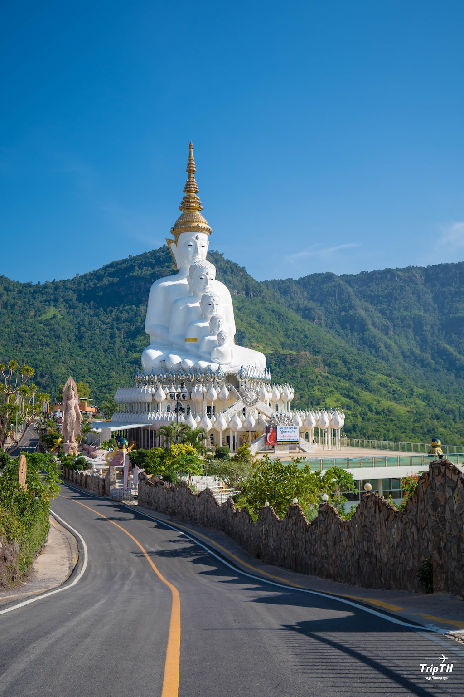

วัดพระธาตุผาซ่อนแก้ว
วัดชื่อดังของเพชรบูรณ์ โดดเด่นด้วยสถาปัตยกรรมที่งดงาม และวิวภูเขารอบด้าน
อ่านเพิ่มเติมสัมผัสทะเลหมอก อากาศเย็น และธรรมชาติที่สวยงาม

วัดชื่อดังของเพชรบูรณ์ โดดเด่นด้วยสถาปัตยกรรมที่งดงาม และวิวภูเขารอบด้าน
อ่านเพิ่มเติม